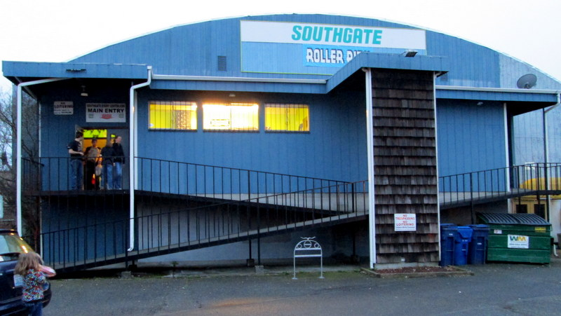
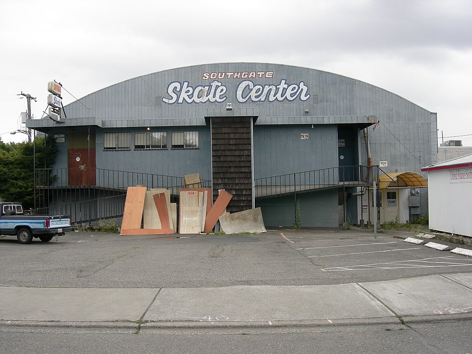

WELCOME, NIGHT SKATERS 🛼
Hi hi hi! DJ Dottie here. I built this little page to keep the flame lit for the greatest place on eight wheels — Southgate Roller Rink in White Center, spinning records and skaters since 1938. My mom did the couples skate here in a gold jumpsuit. I did my first backwards crossover here. If you skated Southgate in the summer of '79, you know there was magic in that mirror ball.
They keep saying disco died in 1979. Well — this page says otherwise, and so does every skater who ever hit the floor when the organ gave way to the four-on-the-floor. Disco's not dead. It just keeps rolling. 💿
— Dottie ✌️ (page last updated 8/14/99)
🎶 TONIGHT'S LINEUP (as posted at the rink, forever)
- Shake Your Groove Thing · Peaches & Herb — 1979
- Knock On Wood · Amii Stewart — 1979
- Ain't No Stoppin' Us Now · McFadden & Whitehead — 1979
- Tragedy · Bee Gees — 1979
- Every 1's a Winner · Hot Chocolate — 1978
- One Nation Under a Groove · Funkadelic — 1978
- Night Fever · Bee Gees — 1977
📸 DOTTIE'S SCRAPBOOK — scanned on the library flatbed, 1999
mom's shoebox of rink photos!! i scanned my favorites before they fade.




📖 GUESTBOOK — sign it or the mirror ball cries
cool page dottie!! southgate 4ever. i did the limbo there in 79 and my back still remembers
my husband proposed during couples skate 1981!!! the organ played our song. crying rn (that means "right now" my grandkid taught me)
this page loads fast on dialup. respect.
anyone else remember the night the whole rink did the hustle at the same time and the floor kinda… hummed? no? just me?
came back for a summer i misplaced. found it. thank you for the dance. p.s. for the four night skaters who know me: this website keeps one page it will not admit to. ask it for a page that isn't there. ✌️ — t.
NOW! MIDI:ON
♫♫♫ DISCO
4EVER Y2K
READY✓ 800×600
BEST VIEW FREE HIT
COUNTER